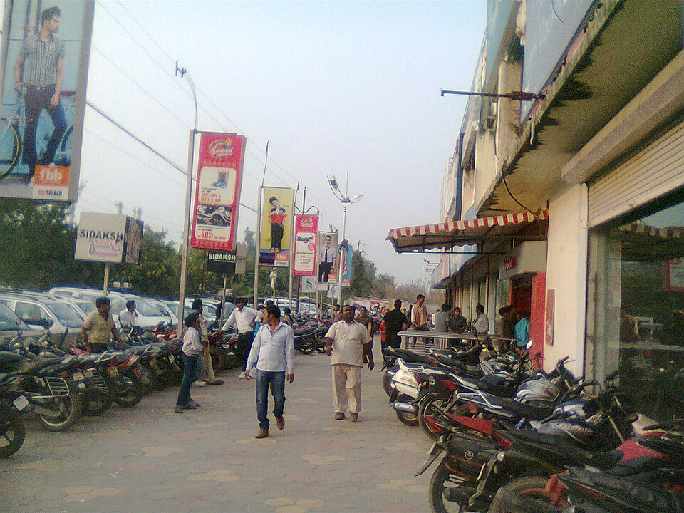

राष्ट्रीय
 राष्ट्रीय
राष्ट्रीयमदुरै पहाड़ी पर दीपथून दीप जलाने को लेकर विवाद, सुप्रीम कोर्ट के आदेश पर टकटकी
तमिलनाडु के मदुरै में कार्तिगई दीपम के दौरान थिरुपरनकुंद्रम पहाड़ी पर दीपथून पर दीप जलाने को लेकर विवाद खड़ा हो गया है। सुप्रीम कोर्ट की अनुमति के बाद भी दीप न जलाए जाने पर हिंदू संगठनों ने आपत्ति जताई है।
राष्ट्रीयतमिलनाडु: सुप्रीम कोर्ट के आदेश के बावजूद पहाड़ी पर नहीं जला दीपक, प्रदर्शन
तमिलनाडु के तिरुपरनकुंद्रम पहाड़ी पर कार्तिगई दीपम के मौके पर सुप्रीम कोर्ट के आदेश के बाद भी चोटी पर दीपक नहीं जलाए जाने पर हिंदू संगठनों ने विरोध प्रदर्शन किया। पुलिस ने 50 से अधिक लोगों को हिरासत में लिया।
राष्ट्रीयअमृतसर में पुरानी रंजिश के चलते फायरिंग, बुजुर्ग महिला की मौत और युवक घायल
पंजाब के अमृतसर में पुरानी रंजिश के कारण बाइक सवार हमलावरों ने फायरिंग की। गोली एक युवक को लगते हुए पीछे खड़ी बुजुर्ग महिला को जा लगी, जिससे उनकी मौके पर ही मौत हो गई।
राष्ट्रीयरामदेव और धीरेंद्र शास्त्री के बीच राम-कृष्ण विवाद पर सुलह, बातचीत का दावा
योग गुरु रामदेव और बागेश्वर धाम के प्रमुख धीरेंद्र कृष्ण शास्त्री ने राम और कृष्ण की तुलना से जुड़े विवाद को बातचीत के बाद सुलझा लिया है।
राष्ट्रीयरामदेव ने दी सफाई, कहा- धीरेंद्र शास्त्री मेरे बच्चे जैसे, डांट को प्यार से स्वीकारा
योगगुरु रामदेव ने धीरेंद्र शास्त्री पर दिए अपने बयान पर सफाई दी है। उन्होंने कहा कि बागेश्वर बाबा उनके छोटे भाई जैसे हैं और उनकी डांट को उन्होंने बड़प्पन दिखाते हुए स्वीकार किया है।
राष्ट्रीयफिल्म 'हनुमान अंश' के मुख्य अभिनेता शोभिनव सत्य को मिली थी मात्र एक लाख रुपये फीस
कम बजट में बनकर करीब 451 करोड़ रुपये की कमाई करने वाली फिल्म 'हनुमान अंश' के लीड एक्टर शोभिनव सत्य ने खुलासा किया है कि उन्हें फिल्म के लिए सिर्फ एक लाख रुपये फीस मिली थी।
राष्ट्रीयमुंबई मॉल मारपीट मामले में किरीट सोमैया के आरोपों पर मदरसे का जवाब
मुंबई के फीनिक्स मॉल गार्डन में कपल के साथ मारपीट की घटना के बाद बीजेपी नेता किरीट सोमैया ने पास के मदरसे पर आरोप लगाए थे, जिसे प्रिंसिपल ने खारिज किया है।
राष्ट्रीयभारत में सीजेपी आंदोलन की वर्तमान स्थिति और राजनीतिक प्रभाव
मई 2026 में शुरू हुआ सीजेपी आंदोलन शिक्षा मंत्री के इस्तीफ़े के बाद अब ठंडा पड़ता नज़र आ रहा है। राजनीतिक विश्लेषक इसे एक व्यापक वैचारिक कार्यक्रम के अभाव और रणनीतिक कमियों से जोड़कर देख रहे हैं।
 राष्ट्रीय
राष्ट्रीयभारतीय सेना ने सुरक्षा चिंताओं के चलते फेसबुक और स्नैपचैट समेत 87 मोबाइल ऐप्स पर लगाई रोक
भारतीय सेना ने डेटा सुरक्षा और संवेदनशील जानकारी के संभावित दुरुपयोग की चिंताओं के बीच अपने कर्मियों के लिए 87 मोबाइल एप्लिकेशन के इस्तेमाल पर प्रतिबंध लगा दिया है।
राष्ट्रीयराजीव गांधी की सुरक्षा जानबूझकर हटाई गई थी, ताकि उनकी हत्या हो सके: राहुल गांधी
एक नए वीडियो में राहुल गांधी ने दावा किया है कि पूर्व प्रधानमंत्री राजीव गांधी की सुरक्षा जानबूझकर हटाई गई थी। सोनिया गांधी और प्रियंका गांधी ने भी इस दौरान अपनी पुरानी यादें साझा कीं।
राष्ट्रीयबेंगलुरु में शादी से इनकार करने पर युवती की हत्या, आरोपी प्रेमी गिरफ्तार
बेंगलुरु के एक लॉज में शादी की बात को लेकर हुए विवाद के बाद एक युवक ने कथित तौर पर अपनी प्रेमिका को तीसरी मंजिल की खिड़की से नीचे धक्का दे दिया, जिससे उसकी मौत हो गई। पुलिस ने आरोपी को गिरफ्तार कर लिया है।
 राष्ट्रीय
राष्ट्रीयपंजाब विधानसभा चुनाव: बीजेपी और शिअद ने छह साल बाद की पुरानी गठबंधन की वापसी
पंजाब विधानसभा चुनाव से पहले बीजेपी और शिरोमणि अकाली दल ने अपने गठबंधन का ऐलान कर दिया है। कृषि कानूनों के विरोध में अकाली दल ने छह साल पहले नाता तोड़ लिया था।
राष्ट्रीयबिहार के लखीसराय में ट्रक और कार की टक्कर, पांच लोगों की मौत
बिहार के लखीसराय जिले में एक भीषण सड़क हादसे में पांच लोगों की मौत हो गई और चार अन्य घायल हो गए। घायलों को अस्पताल में भर्ती कराया गया है।
 राष्ट्रीय
राष्ट्रीयपंजाब विधानसभा चुनाव 2027 से पहले अकाली दल और बीजेपी में हुआ गठबंधन
पंजाब विधानसभा चुनाव 2027 से पहले बीजेपी और शिरोमणि अकाली दल ने छह साल पुराने अलगाव को खत्म करते हुए मंगलवार को नए राजनीतिक गठबंधन का ऐलान किया है।
 राष्ट्रीय
राष्ट्रीयलखनऊ में प्रकाश पर्व पर आयोजित कार्यक्रम में शामिल हुए सीएम योगी
श्री गुरु नानक देव जी के 557वें प्रकाश पर्व पर लखनऊ के डीएवी पीजी कॉलेज में विशेष कार्यक्रम आयोजित हुआ, जिसमें मुख्यमंत्री योगी आदित्यनाथ ने हिस्सा लिया और उनके संदेशों को याद किया।
राष्ट्रीयनोएडा के जेवर में शादी वाले घर में सिलिंडर फटने से पिता-पुत्र की मौत
नोएडा के जेवर क्षेत्र के दयानतपुर गांव में सोमवार शाम एलपीजी सिलिंडर फटने से शादी की तैयारियों में जुटे परिवार के दो सदस्यों की मौत हो गई, जबकि दो अन्य झुलस गए।
 राष्ट्रीय
राष्ट्रीयसमाजवादी पार्टी प्रमुख अखिलेश यादव का फेसबुक पेज बहाल, मेटा को दिया धन्यवाद
समाजवादी पार्टी के अध्यक्ष अखिलेश यादव का आधिकारिक फेसबुक पेज बहाल कर दिया गया है। पार्टी ने इसके लिए मेटा का आभार जताया है। इस पेज पर 90 लाख से अधिक फॉलोअर्स हैं।
राष्ट्रीयपुणे में प्रेम विवाद के बाद सॉफ्टवेयर इंजीनियर ने की प्रेमिका की हत्या
पुणे के हिंजवड़ी इलाके में प्रेम संबंधों के विवाद के बाद एक सॉफ्टवेयर इंजीनियर ने कथित तौर पर अपनी प्रेमिका की पीट-पीटकर हत्या कर दी। वारदात के बाद आरोपी ने खुद पुलिस को फोन किया।
 राष्ट्रीय
राष्ट्रीययूपी चुनाव: सपा और कांग्रेस के बीच सीट बंटवारे पर दूसरे दौर की बैठक शुरू
उत्तर प्रदेश विधानसभा चुनाव के लिए समाजवादी पार्टी और कांग्रेस के बीच सीट बंटवारे को लेकर दिल्ली में दूसरे दौर की बैठक शुरू हो गई है। दोनों दल जीतने की संभावना को आधार मानकर चर्चा कर रहे हैं।
 राष्ट्रीय
राष्ट्रीयएकनाथ शिंदे की शिवसेना 2027 के उत्तर प्रदेश चुनाव में एनडीए के तहत उतरेगी
महाराष्ट्र के उपमुख्यमंत्री एकनाथ शिंदे के नेतृत्व वाली शिवसेना 2027 के उत्तर प्रदेश विधानसभा चुनाव में एनडीए के साथ मिलकर लगभग 30 सीटों पर चुनाव लड़ने की तैयारी कर रही है।
 राष्ट्रीय
राष्ट्रीयसौरव दास को लंदन जाने से रोका गया, पासपोर्ट अधिनियम के प्रावधानों पर उठे सवाल
कॉकरोच जनता पार्टी के नेता सौरव दास ने ऑक्सफ़र्ड यूनियन के कार्यक्रम में शामिल होने के लिए लंदन जाते समय दिल्ली एयरपोर्ट पर रोके जाने का दावा किया है।
 राष्ट्रीय
राष्ट्रीयअमित शाह और सुखबीर बादल आज करेंगे साझा प्रेस कॉन्फ्रेंस, क्या टूटेगा गठबंधन?
केंद्रीय गृह मंत्री अमित शाह और शिरोमणि अकाली दल के अध्यक्ष सुखबीर सिंह बादल आज दोपहर बीजेपी मुख्यालय में एक साझा प्रेस कॉन्फ्रेंस को संबोधित करेंगे।
राष्ट्रीयमदुरै पहाड़ी पर कार्तिगई दीपम उत्सव आज, सुरक्षा के लिए 5600 से अधिक पुलिसकर्मी तैनात
तमिलनाडु के मदुरै स्थित तिरुपरंकुंद्रम पहाड़ी पर आज कार्तिगई दीपम उत्सव के तहत दीप जलाया जाएगा। तनाव की आशंका के बीच सुरक्षा के कड़े इंतजाम किए गए हैं और पहाड़ी पर 5,600 से अधिक पुलिसकर्मी तैनात हैं।
 राष्ट्रीय
राष्ट्रीयपश्चिम बंगाल में बेरोजगार युवाओं को मिलेंगे दो हजार रुपये, दिलीप घोष का बयान
पश्चिम बंगाल में पढ़े-लिखे बेरोजगार युवाओं को दो हजार रुपये की वित्तीय सहायता दिए जाने की योजना है। इस बीच, भाजपा नेता दिलीप घोष ने गोहत्या और कथित धर्मनिरपेक्षता के मुद्दों पर अपनी बात रखी है।
राष्ट्रीयमोकामा: अनंत सिंह के घर बेटी की शादी की तैयारियां तेज, कल होगा आयोजन
बिहार के मोकामा में पूर्व विधायक अनंत सिंह की बेटी की शादी की तैयारियां जोरों पर हैं। कल होने वाले इस आयोजन के लिए सभी इंतजामों का जायजा खुद अनंत सिंह ले रहे हैं।
राष्ट्रीयइस हफ्ते ओटीटी पर रिलीज होंगी पांच नई फिल्में और वेब सीरीज
नवंबर के आखिरी हफ्ते में दर्शकों के लिए मनोरंजन का नया दौर शुरू होने जा रहा है। इस दौरान पांच फिल्में और सीरीज ओटीटी पर रिलीज होने के लिए तैयार हैं।
राष्ट्रीयआगरा-लखनऊ एक्सप्रेसवे पर बस को ट्रक ने मारी टक्कर, चार बच्चों की मौत
उत्तर प्रदेश के कन्नौज जिले में आगरा-लखनऊ एक्सप्रेसवे पर एक तेज रफ्तार ट्रक ने खड़ी स्कूली बस को टक्कर मार दी। इस हादसे में चार बच्चों की मौत हो गई और करीब 35 अन्य घायल हो गए।
राष्ट्रीयपटना: मोकामा विधायक अनंत सिंह की बेटी की शादी की भव्य तैयारियां, चार लाख मेहमानों के लिए भोज
मोकामा से विधायक अनंत सिंह की बेटी की शादी पटना के नदावां गांव में हो रही है। आयोजन में चार लाख से अधिक मेहमानों के शामिल होने की संभावना है, जिसके लिए व्यापक तैयारियां की गई हैं।
राष्ट्रीयउत्तर प्रदेश विधानसभा चुनाव 2027: सीट शेयरिंग को लेकर सियासी दलों में खींचतान
यूपी विधानसभा चुनाव 2027 से पहले सीट बंटवारे को लेकर सुगबुगाहट तेज हो गई है। कांग्रेस ने आजमगढ़ की निजामाबाद सीट पर दावा ठोका है, वहीं एनडीए में भी कुछ सीटों को लेकर मतभेद की खबरें सामने आ रही हैं।
राष्ट्रीयउत्तर प्रदेश चुनाव 2027: सपा और कांग्रेस के बीच गठबंधन पर सहमति, सीट बंटवारे पर फंसा पेंच
उत्तर प्रदेश विधानसभा चुनाव 2027 के लिए समाजवादी पार्टी और कांग्रेस के बीच गठबंधन तय हो गया है, लेकिन सीटों के बंटवारे पर चर्चा अभी जारी है। कांग्रेस ने अपनी मांग घटाई है, जबकि सपा जीतने की क्षमता पर जोर दे रही है।
राष्ट्रीयकॉकरोच जनता पार्टी के नेता सौरव दास को दिल्ली एयरपोर्ट पर यूके जाने से रोका
कॉकरोच जनता पार्टी के नेता सौरव दास ने आरोप लगाया है कि उन्हें ऑक्सफोर्ड यूनियन में लेक्चर देने के लिए यूके जाने से दिल्ली एयरपोर्ट पर रोक दिया गया।
राष्ट्रीयशाहरुख खान की फिल्म 'किंग' का नया गाना 'डैडी कूल' 25 नवंबर को हो सकता है लॉन्च
शाहरुख खान और करीना कपूर की फिल्म 'किंग' का नया गाना 'डैडी कूल' 25 नवंबर को रिलीज हो सकता है। इस गाने में दोनों करीब 15 साल बाद साथ नजर आएंगे।
राष्ट्रीयउत्तर प्रदेश विधानसभा चुनाव: बीजेपी ने बढ़ाई चुनावी सरगर्मी, सीट-बंटवारे पर चर्चा तेज
उत्तर प्रदेश विधानसभा चुनाव को लेकर बीजेपी ने सीट-बंटवारे और जमीनी स्तर पर जनसंपर्क अभियानों को तेज कर दिया है। नई दिल्ली में 27-28 नवंबर को होने वाली राष्ट्रीय पदाधिकारियों की बैठक में चुनावी रणनीति पर चर्चा होगी।
 राष्ट्रीय
राष्ट्रीयदिल्ली में मुफ्त बिजली सब्सिडी के लिए पंजीकरण अनिवार्य, दिसंबर में लॉन्च होगा पोर्टल
दिल्ली सरकार ने मुफ्त बिजली योजना का लाभ उठाने के लिए पंजीकरण अनिवार्य कर दिया है। इसके लिए दिसंबर के पहले हफ्ते में एक समर्पित पोर्टल लॉन्च किया जाएगा, जिसके जरिए उपभोक्ताओं को सब्सिडी चुननी होगी।
राष्ट्रीयपंचायत सीजन 5 से पहले अभिनेता ने बताया, 'बिनोद' के किरदार ने कैसे बदली जिंदगी
लोकप्रिय वेब सीरीज 'पंचायत' में 'बिनोद' की भूमिका निभाने वाले अभिनेता ने साझा किया कि इस किरदार ने उनके जीवन और करियर में किस तरह के सकारात्मक बदलाव किए हैं।
 राष्ट्रीय
राष्ट्रीयहिमाचल प्रदेश: मंडी में सिख बच्चे के बाल काटने पर विवाद, ससुर ने बहू के खिलाफ दर्ज कराई शिकायत
हिमाचल प्रदेश के मंडी जिले में सात साल के सिख बच्चे के बाल काटने को लेकर पारिवारिक विवाद सामने आया है। बच्चे के दादा ने थाने में शिकायत दर्ज कराई है।
 राष्ट्रीय
राष्ट्रीयवाराणसी: अनंत अंबानी ने किए बाबा विश्वनाथ के दर्शन, पांच करोड़ रुपये दान दिए
रिलायंस इंडस्ट्रीज के कार्यकारी निदेशक अनंत अंबानी ने सोमवार को वाराणसी में बाबा विश्वनाथ और मां अन्नपूर्णा के दर्शन किए। इस दौरान उन्होंने विश्वनाथ धाम को पांच करोड़ और अन्नपूर्णा मंदिर को एक करोड़ रुपये दान दिए।
राष्ट्रीयऑक्सफोर्ड यूनिवर्सिटी में व्याख्यान के लिए जा रहे कॉकरोच जनता पार्टी के सौरभ दास को दिल्ली एयरपोर्ट पर रोका गया
कॉकरोच जनता पार्टी के नेता सौरभ दास ने आरोप लगाया है कि उन्हें दिल्ली एयरपोर्ट पर रोक लिया गया, जिससे वे ऑक्सफोर्ड यूनिवर्सिटी में व्याख्यान देने लंदन नहीं जा सके।
राष्ट्रीयतमिलनाडु के तिरुपरनकुंद्रम पहाड़ी पर कार्तिगई दीपम विवाद, सुप्रीम कोर्ट की अनुमति
तमिलनाडु के मदुरै स्थित तिरुपरनकुंद्रम पहाड़ी पर कार्तिगई दीपम के दौरान दीप जलाने को लेकर विवाद सामने आया है। सुप्रीम कोर्ट ने इस साल के लिए विशेष अनुमति दी है।
 राष्ट्रीय
राष्ट्रीयगुरु नानक जयंती 2026: देशभर में आज मनाया जा रहा है प्रकाश पर्व
देशभर में आज गुरु नानक देव जी का प्रकाश पर्व मनाया जा रहा है। इस अवसर पर भारत और दुनिया भर के गुरुद्वारों में अखंड पाठ, नगर कीर्तन और लंगर का आयोजन किया जा रहा है।
राष्ट्रीयबिहार में JDU मना रही सुशासन दिवस, नीतीश कुमार के 21 साल के कामकाज पर चर्चा
जनता दल यूनाइटेड (JDU) बिहार के सभी 38 जिलों में सुशासन दिवस मना रही है। पार्टी नीतीश कुमार के मुख्यमंत्री के रूप में 21 साल पूरे होने पर विकास कार्यों और उपलब्धियों को जनता के सामने रख रही है।
राष्ट्रीयकर्नाटक के सभी स्कूलों में छात्राओं को मुफ्त सैनिटरी पैड देना अनिवार्य
कर्नाटक सरकार ने छठी से 12वीं कक्षा तक की सभी छात्राओं को स्कूलों में मुफ्त सैनिटरी पैड उपलब्ध कराने का आदेश दिया है। इसके साथ ही शौचालयों में वेंडिंग मशीनें लगानी होंगी।
 राष्ट्रीय
राष्ट्रीयपुरी जगन्नाथ मंदिर में दर्शन के नाम पर ठगी, पांच गिरफ्तार
ओडिशा के पुरी में जगन्नाथ मंदिर में सुगम दर्शन कराने का झांसा देकर 13 प्रवासी भारतीयों से ठगी करने के आरोप में पुलिस ने पांच लोगों को गिरफ्तार किया है।
राष्ट्रीयनीतीश सेतु पर पीएम-सीएम के बैनर फाड़ने के मामले में 10 गिरफ्तार
बिहार में नीतीश सेतु के उद्घाटन के बाद प्रधानमंत्री और मुख्यमंत्री के बैनर-पोस्टर फाड़ने के मामले में पुलिस ने 10 उपद्रवी तत्वों को गिरफ्तार किया है। जांच में घटना को सुनियोजित बताया गया है।
राष्ट्रीयसमाजवादी पार्टी प्रमुख अखिलेश यादव का फेसबुक पेज कुछ घंटे बाद बहाल
समाजवादी पार्टी के राष्ट्रीय अध्यक्ष अखिलेश यादव का फेसबुक पेज कुछ घंटों की बंदी के बाद सोमवार को दोबारा सक्रिय हो गया। इस पेज से करीब 90 लाख लोग जुड़े हैं।
राष्ट्रीयगुजरात के बनासकांठा में गर्भवती प्रेमिका की हत्या, प्रेमी गिरफ्तार
गुजरात के बनासकांठा जिले में 19 वर्षीय गर्भवती युवती की गला घोंटकर हत्या के मामले में पुलिस ने उसके प्रेमी विजय सोलंकी को गिरफ्तार किया है। पोस्टमार्टम रिपोर्ट से मामले का खुलासा हुआ था।
राष्ट्रीयपुणे में सॉफ्टवेयर इंजीनियर ने की गर्लफ्रेंड की हत्या, अवैध रिश्ते का शक
पुणे के हिंजवडी इलाके में अवैध रिश्ते के शक में एक सॉफ्टवेयर इंजीनियर द्वारा अपनी पार्टनर की पीट-पीटकर हत्या करने का मामला सामने आया है। पुलिस मामले की जांच कर रही है।
राष्ट्रीयसोनिया गांधी को सावरकर पर टिप्पणी को लेकर कानूनी नोटिस
कांग्रेस नेता सोनिया गांधी को उनकी नई किताब में वीर सावरकर पर की गई टिप्पणियों के लिए कानूनी नोटिस भेजा गया है। वीडी सावरकर के पड़पोते ने 15 दिन में जवाब मांगा है।
राष्ट्रीयमलयालम अभिनेता श्रीजीत रवि को पोक्सो मामले में एक साल की सजा
तृषूर की एक अदालत ने मलयालम अभिनेता श्रीजीत रवि को नाबालिग लड़कियों से जुड़े पोक्सो मामले में एक साल की कैद की सजा सुनाई है।
राष्ट्रीयसेना और सीएपीएफ के व्हाट्सएप ग्रुप में पाकिस्तानी जासूसों की सेंध, ऑडिट के आदेश
सुरक्षा एजेंसियों ने सेना और सीएपीएफ अधिकारियों के निजी व्हाट्सएप ग्रुपों में पाकिस्तानी जासूसों की घुसपैठ पकड़ी है। जासूस साइलेंट मेंबर बनकर गोपनीय जानकारी पर नजर रख रहे थे, जिसके बाद पूरे सिस्टम का ऑडिट कराने का निर्देश दिया गया है।
राष्ट्रीयअसम के मुख्यमंत्री हिमंता बिस्वा सरमा ने साझा किया बोगीबील ब्रिज का महत्व
असम के मुख्यमंत्री हिमंत बिस्वा सरमा ने चीन सीमा के पास स्थित बोगीबील ब्रिज का सामरिक और आर्थिक महत्व बताया है। ब्रह्मपुत्र नदी पर बना यह रेल-सड़क पुल डिब्रूगढ़ और धेमाजी को जोड़ता है।
राष्ट्रीयदिल्ली के जामा मस्जिद थाने में पुलिसकर्मियों पर चाकू से हमला, एनकाउंटर में आरोपी घायल
दिल्ली के जामा मस्जिद थाने में पूछताछ के दौरान एक आरोपी ने पुलिसकर्मियों पर चाकू से हमला कर दिया, जिसमें नौ जवान घायल हो गए। इसके बाद पुलिस मुठभेड़ में आरोपी के पैर में गोली लगी और उसे गिरफ्तार कर लिया गया।
राष्ट्रीयमथुरा पुलिस ने शादी समारोहों में चोरी करने वाले कड़िया सांसी गैंग के 120 चेहरे किए जारी
मथुरा पुलिस ने शादी समारोहों में नकदी और आभूषण चुराने वाले अंतरराज्यीय कड़िया सांसी गिरोह के 120 से अधिक सदस्यों की तस्वीरें जारी कर लोगों को सतर्क रहने की चेतावनी दी है।
राष्ट्रीयकौशांबी में प्रेमी से शादी के विरोध पर बेटी ने रची मां की हत्या की साजिश
उत्तर प्रदेश के कौशांबी में प्रेमी से शादी की जिद में बेटी ने मां की हत्या कर दी। पुलिस ने आरोपी बेटी और उसके प्रेमी को गिरफ्तार कर लिया है।
राष्ट्रीयउत्तर प्रदेश विधानसभा चुनाव 2027: समाजवादी पार्टी और कांग्रेस के बीच सीट शेयरिंग पर बैठक
साल 2027 के उत्तर प्रदेश विधानसभा चुनाव के लिए समाजवादी पार्टी और कांग्रेस ने सीट बंटवारे को लेकर शुरुआती चर्चा शुरू कर दी है। दोनों दलों के नेताओं ने बैठक को सकारात्मक बताया है।
 राष्ट्रीय
राष्ट्रीयप्रधानमंत्री नरेंद्र मोदी पहली बार जाएंगे दिल्ली के उपराज्यपाल आवास
प्रधानमंत्री नरेंद्र मोदी गुरु नानक देव के प्रकाश पर्व के अवसर पर दिल्ली के उपराज्यपाल आवास पर आयोजित शबद कीर्तन कार्यक्रम में शामिल होंगे।

राष्ट्रीयमथुरा में धीरेंद्र शास्त्री को कंस के रूप में दिखाने पर विवाद, डीएम को ज्ञापन
मथुरा के कंस वध मेले में बागेश्वर धाम के पीठाधीश्वर धीरेंद्र कृष्ण शास्त्री को कंस के रूप में दर्शाने वाली झांकी पर विवाद खड़ा हो गया है। उनके समर्थकों ने जिला प्रशासन से शिकायत कर कार्रवाई की मांग की है।
राष्ट्रीयउत्तर प्रदेश चुनाव: कांग्रेस और सपा के बीच सीट बंटवारे पर जल्द बन सकती है सहमति
उत्तर प्रदेश विधानसभा चुनाव 2027 के लिए कांग्रेस और समाजवादी पार्टी के बीच सीट बंटवारे को लेकर बातचीत आगे बढ़ रही है। दोनों दलों के नेताओं के अनुसार अगले दो से तीन दिनों में समझौता होने की संभावना है।
राष्ट्रीयपश्चिम बंगाल का नाम बदलने की तैयारी, 9 दिसंबर को विधानसभा में आएगा प्रस्ताव
पश्चिम बंगाल का नाम बदलकर ‘पश्चिम बंगा’ करने का प्रस्ताव 9 दिसंबर को विधानसभा में पेश किया जाएगा। कैबिनेट बैठक में यह निर्णय लिया गया है।
राष्ट्रीयपश्चिम बंगाल SIR: सुप्रीम कोर्ट का ईसीआई को न्यायाधिकरण बढ़ाने और नाम हटाने के मामलों को प्राथमिकता देने का निर्देश
सुप्रीम कोर्ट ने चुनाव आयोग को पश्चिम बंगाल में चुनावी सूची से नाम हटाने के खिलाफ अपील सुनने वाले न्यायाधिकरणों की संख्या बढ़ाने और ऐसे मामलों को प्राथमिकता देने का निर्देश दिया है।
राष्ट्रीयफरीदाबाद में देश विरोधी और पाकिस्तान के समर्थन में नारे लगाने वाला गिरफ्तार
हरियाणा के फरीदाबाद में विवाद के दौरान पाकिस्तान और आतंकी संगठनों के समर्थन में नारे लगाने का वीडियो वायरल होने के बाद पुलिस ने आरोपी सुन्नी खान को गिरफ्तार कर लिया है।
राष्ट्रीयकरीना और करिश्मा के संडे लंच में शामिल हुईं सुप्रिया सुले
मुंबई में रीमा जैन के आवास पर आयोजित फैमिली लंच में करीना कपूर, करिश्मा कपूर और एनसीपी नेता सुप्रिया सुले शामिल हुईं। इस दौरान अरमान जैन ने खुद खाना बनाया।
राष्ट्रीयदिल्ली के एक कैफे में पाकिस्तानी ड्रामे की स्क्रीनिंग पर सोशल मीडिया पर बहस
दिल्ली के एक कैफे में पाकिस्तानी ड्रामा 'दर-ए-नजात' की स्क्रीनिंग का वीडियो सामने आने के बाद सोशल मीडिया पर मिली-जुली प्रतिक्रियाएं और बहस छिड़ गई है।
राष्ट्रीयसुप्रीम कोर्ट ने दल-बदल कानून में बदलाव की मांग पर केंद्र और चुनाव आयोग से मांगा जवाब
सुप्रीम कोर्ट ने दल-बदल कानून में संशोधन की मांग वाली याचिका पर केंद्र सरकार, चुनाव आयोग, लॉ कमीशन और मंत्रालयों को नोटिस जारी किया है। याचिका में इस्तीफे के जरिए अयोग्यता से बचने की प्रवृत्ति पर रोक लगाने की मांग की गई है।
राष्ट्रीयगाजियाबाद में दिल्ली-मेरठ एक्सप्रेसवे पार कर रहे दंपती और बेटे की सड़क हादसे में मौत
गाजियाबाद के क्रॉसिंग रिपब्लिक क्षेत्र में दिल्ली-मेरठ एक्सप्रेसवे पार कर रहे एक ही परिवार के तीन सदस्यों को तेज रफ्तार स्कॉर्पियो ने टक्कर मार दी, जिससे उनकी मौके पर ही मौत हो गई।
 राष्ट्रीय
राष्ट्रीयभारतीय रेलवे की करंट टिकट बुकिंग सुविधा, चार्ट बनने के बाद ऐसे पाएं सीट
ट्रेन में कन्फर्म टिकट नहीं मिलने पर यात्री IRCTC के जरिए करंट टिकट बुक कर सकते हैं। यह सुविधा ट्रेन का चार्ट तैयार होने के बाद खाली बची सीटों के लिए मिलती है।
 राष्ट्रीय
राष्ट्रीयसरकार की यूनिवर्सल सब्सिडी योजना का दावा फर्जी, पीआईबी ने दी चेतावनी
सोशल मीडिया पर वायरल हो रहा वह दावा फर्जी है, जिसमें 2026 की सरकारी यूनिवर्सल सब्सिडी योजना के तहत हर नागरिक को ₹30,000 मिलने की बात कही जा रही है।
राष्ट्रीयएआर रहमान ने नितेश तिवारी की फिल्म 'रामायण' के लिए छोड़े 12 प्रोजेक्ट
ऑस्कर विजेता संगीतकार एआर रहमान ने खुलासा किया है कि उन्होंने नितेश तिवारी की फिल्म 'रामायण' के संगीत पर ध्यान केंद्रित करने के लिए करीब 10 से 12 फिल्मों के प्रस्ताव ठुकरा दिए।
राष्ट्रीयबिहार का बख्तियारपुर-ताजपुर महासेतु 15 साल बाद भी अधूरा, अब जून 2027 की नई डेडलाइन
बिहार के बख्तियारपुर-ताजपुर महासेतु का निर्माण 15 साल बाद भी पूरा नहीं हुआ है। देरी के कारण परियोजना की लागत बढ़कर ₹4,572 करोड़ हो गई है, और अब इसे जून 2027 तक चालू करने का नया लक्ष्य रखा गया है।
राष्ट्रीयअखिलेश यादव अयोध्या जाने से पहले प्रायश्चित करें: बृजभूषण शरण सिंह
पूर्व भाजपा सांसद बृजभूषण शरण सिंह ने गोंडा में कहा कि अखिलेश यादव को अयोध्या दौरे से पहले संतों का प्रायश्चित वाला वचन मान लेना चाहिए। उन्होंने ओवैसी और चंद्रशेखर के गठबंधन को बेमेल बताया।
राष्ट्रीयवैशाली के नीतीश सेतु पर पीएम मोदी का पोस्टर फाड़ने के मामले में तीन गिरफ्तार
बिहार के वैशाली जिले में नीतीश सेतु पर प्रधानमंत्री नरेंद्र मोदी और अन्य एनडीए नेताओं के पोस्टर फाड़ने और हंगामा करने के आरोप में पुलिस ने तीन लोगों को गिरफ्तार किया है।
राष्ट्रीयउत्तर प्रदेश चुनाव: सीट शेयरिंग को लेकर सपा और कांग्रेस की बैठक आज
उत्तर प्रदेश विधानसभा चुनाव के लिए समाजवादी पार्टी और कांग्रेस के बीच सीट बंटवारे पर दिल्ली में सोमवार से पहले दौर की बैठक शुरू हो रही है। दोनों दलों की समन्वय समितियां इस पर मंथन करेंगी।
राष्ट्रीयउत्तर प्रदेश विधानसभा चुनाव 2027: अगले महीने से यूपी दौरे शुरू कर सकते हैं अमित शाह
भारतीय जनता पार्टी ने उत्तर प्रदेश विधानसभा चुनाव 2027 की तैयारियां तेज कर दी हैं। केंद्रीय गृह मंत्री अमित शाह अगले महीने से राज्य के दौरे शुरू कर सकते हैं, जिसके तहत संगठनात्मक मजबूती और चुनावी रणनीति पर फोकस रहेगा।
राष्ट्रीयफिक्की कार्यक्रम में पीएम मोदी ने उद्योग जगत से रोजगार और वेतन पर किए सवाल
प्रधानमंत्री नरेंद्र मोदी ने फिक्की के कार्यक्रम में उद्योग जगत पर सवाल उठाते हुए कहा कि कॉर्पोरेट मुनाफे के बावजूद कर्मचारियों के वेतन और नौकरियों में अपेक्षित बढ़ोतरी नहीं हुई है। उन्होंने गुणवत्ता और स्वदेशी अपनाने पर भी जोर दिया।
राष्ट्रीयझारखंड के दुमका में कोल ब्लॉक सर्वे का विरोध, ग्रामीणों से झड़प में 12 जवान घायल
झारखंड के दुमका जिले में कोल ब्लॉक सर्वे के दौरान ग्रामीणों और पुलिसकर्मियों के बीच तीखी झड़प हो गई। इस दौरान ग्रामीणों ने कंपनी के अधिकारियों को बंधक बना लिया और पथराव में 12 जवान घायल हो गए।
राष्ट्रीयइंदौर डबल मर्डर मामला: गोद लिए बेटे ने संपत्ति विवाद में की पिता और बहन की हत्या
मध्य प्रदेश के इंदौर में हुए दोहरे हत्याकांड में चौंकाने वाला खुलासा हुआ है। संपत्ति विवाद को लेकर 28 साल पहले गोद लिए गए बेटे ने ही पिता और बहन की हत्या की थी।
राष्ट्रीयझारखंड के पूर्व मुख्यमंत्री अर्जुन मुंडा की मां सायरा मुंडा का निधन
झारखंड के पूर्व मुख्यमंत्री और भाजपा नेता अर्जुन मुंडा की मां सायरा मुंडा का लंबी बीमारी के बाद 91 वर्ष की आयु में निधन हो गया है। उनका अंतिम संस्कार सोमवार को किया जाएगा।
राष्ट्रीयआजम खान का ओवैसी और चंद्रशेखर पर निशाना, अखिलेश पर भी रखी बात
समाजवादी पार्टी नेता आजम खान ने एक इंटरव्यू में AIMIM प्रमुख असदुद्दीन ओवैसी को लेकर तीखे बयान दिए और चंद्रशेखर आजाद पर गद्दारी का आरोप लगाया। साथ ही अखिलेश यादव के साथ अपने संबंधों पर भी बात की।
राष्ट्रीयलखनऊ में पुणे-पटना इंडिगो फ्लाइट की आपात लैंडिंग, खराब मौसम बना कारण
पटना में खराब मौसम और कम दृश्यता के कारण पुणे से पटना जा रही इंडिगो की उड़ान को लखनऊ डायवर्ट करना पड़ा, जहां सोमवार तड़के विमान सुरक्षित उतरा गया।
राष्ट्रीयनवी मुंबई के तुर्भे स्थित एमआईडीसी ऑयल वेयरहाउस में लगी भीषण आग
नवी मुंबई के तुर्भे में महाराष्ट्र औद्योगिक विकास निगम के ऑयल वेयरहाउस में भीषण आग लग गई है। दमकल विभाग की टीमें मौके पर पहुंचकर आग बुझाने के काम में जुटी हैं।
राष्ट्रीयपैर की चोट के कारण अभिनेता मनीष गोयल ने छोड़ा 'बिग बॉस 20'
पैर में गंभीर चोट और डॉक्टरों की सलाह के बाद अभिनेता मनीष गोयल ने रियलिटी शो 'बिग बॉस 20' को बीच में ही अलविदा कह दिया है।
राष्ट्रीयनतेश तिवारी की 'रामायण' का बॉक्स ऑफिस पर धमाल, 18 दिनों में कमाई ₹1693 करोड़ पार
नतेश तिवारी के निर्देशन में बनी पौराणिक फिल्म 'रामायण: पार्ट 1' बॉक्स ऑफिस पर शानदार प्रदर्शन कर रही है। फिल्म ने 18 दिनों में दुनिया भर में ₹1,693 करोड़ से अधिक की कुल कमाई कर ली है।
राष्ट्रीयसीएम योगी आदित्यनाथ ने मां को समर्पित किया भावुक पत्र
उत्तर प्रदेश के मुख्यमंत्री योगी आदित्यनाथ ने मां के नाम एक भावुक पत्र लिखा है, जिसमें उन्होंने संन्यास के बाद मां से भिक्षा मांगने और उनके साथ जुड़े संस्मरणों को साझा किया है।
 राष्ट्रीय
राष्ट्रीयदिल्ली के निजी स्कूलों में नर्सरी दाखिला प्रक्रिया शुरू, एक दिसंबर से करें आवेदन
दिल्ली के निजी स्कूलों में शैक्षणिक सत्र 2027-28 के लिए नर्सरी और अन्य प्रारंभिक कक्षाओं में दाखिला प्रक्रिया शुरू हो गई है। स्कूल सोमवार से अपने मानदंड अपलोड करेंगे, जबकि एक दिसंबर से आवेदन किए जा सकेंगे।
 राष्ट्रीय
राष्ट्रीयदिल्ली मेट्रो मैजेंटा लाइन पर छह नए स्टेशन जनवरी 2027 तक होंगे शुरू
दिल्ली मेट्रो की मैजेंटा लाइन पर छह नए स्टेशनों का निर्माण कार्य पूरा हो चुका है। इनके शुरू होने से दिल्ली से नोएडा और गुरुग्राम के बीच सफर करने वाले यात्रियों को बड़ी राहत मिलने की उम्मीद है।
राष्ट्रीयदिल्ली के जामा मस्जिद थाने में चाकू से हमला, पांच पुलिसकर्मी घायल
दिल्ली के जामा मस्जिद थाने में पारिवारिक विवाद की शिकायत पर बुलाए गए एक व्यक्ति ने पुलिसकर्मियों पर चाकू से हमला कर दिया। हमले में पांच पुलिसकर्मी घायल हो गए, जिन्हें अस्पताल में भर्ती कराया गया है।
राष्ट्रीयशहरी भारत में बदल रहा संयुक्त परिवार का स्वरूप, एक ही सोसाइटी में अलग फ्लैट ले रहे परिवार
महंगे मकानों और निजी जिंदगी की चाह के बीच शहरों में संयुक्त परिवार का नया मॉडल सामने आ रहा है। इसमें माता-पिता और बच्चे एक ही हाउसिंग सोसाइटी में अलग-अलग फ्लैटों में रहकर एक-दूसरे का सहयोग कर रहे हैं।
राष्ट्रीयमहाराष्ट्र के अकोला में चलती ट्रेन से उतरे युवक को ASI ने बचाया
अकोला रेलवे स्टेशन पर वीडियो कॉल करते हुए चलती ट्रेन से उतर रहा 24 वर्षीय युवक प्लेटफॉर्म और ट्रेन के बीच फंस गया था. रेलवे पुलिस के ASI ने तत्परता दिखाते हुए उसकी जान बचाई.
राष्ट्रीयनवी मुंबई की ऑयल कंपनी में भीषण आग, प्लाईवुड और कूरियर दफ्तर भी चपेट में
नवी मुंबई के वाशी सेक्टर-18 में एक ऑयल कंपनी में रविवार रात भीषण आग लग गई, जो फैलकर प्लाईवुड और कूरियर कंपनियों तक पहुंच गई। रातभर चले रेस्क्यू ऑपरेशन के बाद किसी के हताहत होने की खबर नहीं है।
 राष्ट्रीय
राष्ट्रीयउत्तर भारत में ठंड और बढ़ी, हिमाचल के ताबो में पारा माइनस 4.6 डिग्री पहुंचा
पर्वतीय राज्यों में बर्फबारी और चक्रवात अकवान के असर से उत्तर भारत में ठंड बढ़ने लगी है। हिमाचल प्रदेश के ताबो में न्यूनतम तापमान माइनस 4.6 डिग्री दर्ज किया गया, जबकि कई राज्यों में कोहरे और बारिश का अनुमान है।
 राष्ट्रीय
राष्ट्रीयकंगना रनौत ने किया ताजमहल का दौरा, राहुल गांधी पर साधा निशाना
बीजेपी सांसद कंगना रनौत ने परिवार के साथ ताजमहल का दौरा किया और कांग्रेस नेता राहुल गांधी की अर्थव्यवस्था संबंधी टिप्पणी पर तीखा हमला बोला।
राष्ट्रीयसाइबर ठगी से निपटने के लिए दिल्ली-एनसीआर में ‘कम्युनिटी शील्ड’ पहल शुरू
दिल्ली-एनसीआर की सोसायटियों में बुजुर्गों को ‘डिजिटल अरेस्ट’ और साइबर ठगी से बचाने के लिए पुलिस, आरडब्ल्यूए और पड़ोसियों ने मिलकर ‘कम्युनिटी शील्ड’ यानी ‘बडी सिस्टम’ की शुरुआत की है।
राष्ट्रीययूपी चुनाव 2027: आज़म खान के बयान पर सियासत, AIMIM ने बंटवाई हैदराबादी बिरयानी
उत्तर प्रदेश में 2027 के विधानसभा चुनाव से पहले आज़म खान के बयान के बाद AIMIM ने इटावा में हैदराबादी बिरयानी बंटवाई। पार्टी नेताओं ने आगामी चुनाव में बड़े पैमाने पर मुस्लिम समर्थन मिलने का दावा किया है।
राष्ट्रीयपंजाब चुनाव और राजस्थान की राजनीति पर सचिन पायलट का बड़ा बयान
कांग्रेस नेता सचिन पायलट ने एक साक्षात्कार में पंजाब विधानसभा चुनाव की तैयारियों और राजस्थान पंचायत चुनाव में पार्टी की सफलता पर अपनी बात रखी।
राष्ट्रीयहैदराबाद में 26/11 जैसे हमलों की धमकी मिला ईमेल, सुरक्षा बढ़ाई गई
हैदराबाद पुलिस को एक धमकी भरा ईमेल मिला है, जिसमें 26/11 जैसे हमलों की चेतावनी दी गई है। ईमेल के बाद शहर में सुरक्षा कड़ी कर दी गई है और जांच शुरू हो गई है।
राष्ट्रीयवृंदावन के बांके बिहारी मंदिर की एलईडी स्क्रीन पर वेब सीरीज चलने से नाराजगी
वृंदावन के प्रसिद्ध बांके बिहारी मंदिर परिसर में लगी एलईडी स्क्रीन पर वेब सीरीज चलने का वीडियो वायरल होने के बाद गोस्वामी समाज में भारी नाराजगी है। सेवायतों ने मंदिर प्रबंधन की व्यवस्थाओं पर सवाल उठाए हैं।
राष्ट्रीयउत्तर प्रदेश के जालौन में एलपीजी सिलेंडर फटने से 13 बच्चों समेत 23 झुलसे
उत्तर प्रदेश के जालौन जिले में रविवार शाम एक स्थानीय पार्षद के घर में एलपीजी सिलेंडर फटने से 13 बच्चों सहित 23 लोग घायल हो गए। सभी का इलाज जारी है।
राष्ट्रीयकांग्रेस दिसंबर में शुरू करेगी 'वोट चोरी' के खिलाफ राष्ट्रव्यापी अभियान
कांग्रेस पार्टी दिसंबर में भोपाल से 'वोट चोरी' के खिलाफ देशव्यापी आंदोलन शुरू करेगी। राहुल गांधी और प्रियंका गांधी वाड्रा इस अभियान का नेतृत्व करेंगे।
राष्ट्रीयतिरछिलापल्ली सड़क दुर्घटना: पीएम मोदी ने मृतकों के परिजनों के लिए ₹2 लाख मुआवजे की घोषणा की
प्रधानमंत्री नरेंद्र मोदी ने तमिलनाडु के तिरुचिरापल्ली जिले में हुई सड़क दुर्घटना में जान गंवाने वालों के प्रति संवेदना व्यक्त की है और प्रधानमंत्री राष्ट्रीय राहत कोष से आर्थिक सहायता की घोषणा की है।
राष्ट्रीयप्रधानमंत्री नरेंद्र मोदी ने गुजरात के विकास का श्रेय भाजपा कार्यकर्ताओं को दिया
प्रधानमंत्री नरेंद्र मोदी ने वर्चुअल माध्यम से गुजरात भाजपा के दीवाली स्नेह मिलन कार्यक्रम को संबोधित करते हुए राज्य के विकास का श्रेय कार्यकर्ताओं को दिया और सार्वजनिक जीवन में अपने 25 साल पूरे होने को याद किया।